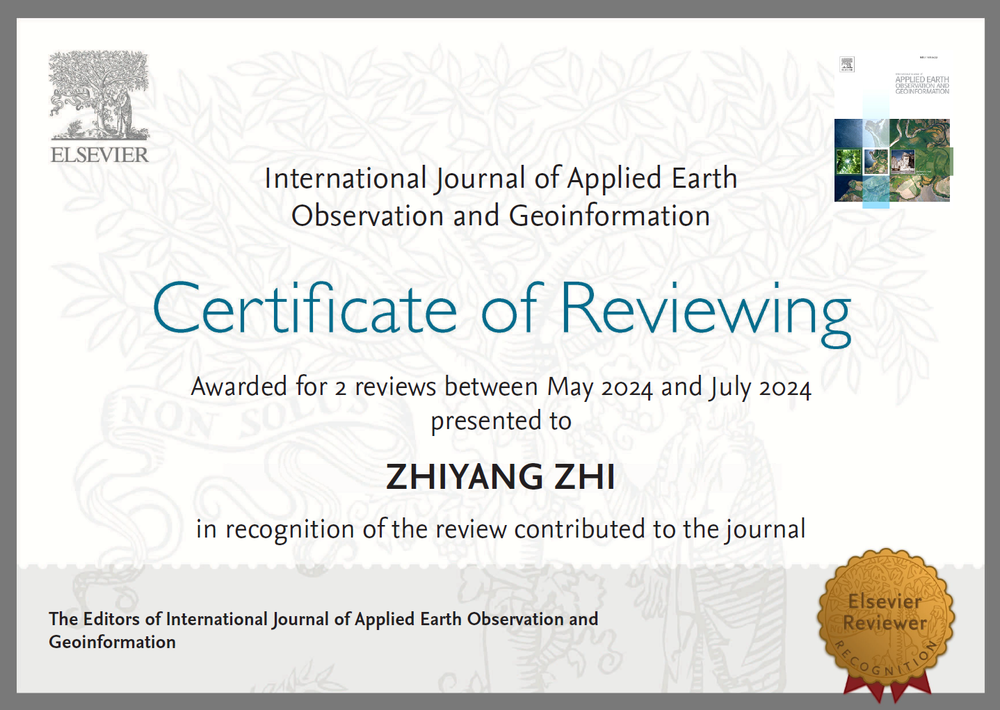

博士研究生 · 中山大学
PhD Candidate · Sun Yat-sen University
智志洋
Zhi Zhiyang
Zhi Zhiyang · zhizhiy@126.com
智志洋 · zhizhiy@126.com
专注于三维激光点云数据获取与处理、工程智能建造及地理信息系统。目前就读于中山大学遥感科学与技术学院，曾前往意大利 FBK 从事国家公派交流访学。
Researching 3D LiDAR data acquisition & processing, intelligent engineering construction, and GIS. PhD candidate at School of Geospatial Engineer and Science, Sun Yat-sen University. Currently a visiting scholar at FBK, Italy.
ZZY
01
研究方向Research Interests
LiDAR Data Acquisition & Application
三维激光数据获取与应用
Intelligent Engineering
工程智能建造
GIS & Smart Transport
地理信息系统与智慧交通
02
教育经历Education
2022.09
— 2026.07
— 2026.07
博士PhD
中山大学
Sun Yat-sen University
遥感科学与技术学院 · 资源与环境
School of Remote Sensing & Information Technology · Resources & Environment
"双一流"建设高校
2024.11
— 2026.02
— 2026.02
交流Exchange
FBK · Fondazione Bruno Kessler
3D Optical Metrology Unit · 摄影测量与遥感Photogrammetry & Remote Sensing
国家公派State Funded
2019.09
— 2022.07
— 2022.07
硕士Master
郑州大学Zhengzhou University
地球科学与技术学院 · 测绘科学与技术专业
College of Earth Science & Technology · Geomatics
"双一流"建设高校
2015.09
— 2019.07
— 2019.07
本科Bachelor
河南理工大学Henan Polytechnic University
测绘与国土信息工程学院 · 测绘工程（卓越工程师）
School of Surveying & Land Information Engineering · Surveying Engineering (Top Engineer Program)
"双一流"建设学科
03
学术成果Publications
01
P-CSF: Polar coordinate cloth simulation filtering algorithm for multi-type tunnel point clouds
First Author
中科院 1区 TOP
SCI
02
Geospatial structure and evolution analysis of national terrestrial adjacency network based on complex network
First Author
中科院 1区TOP
EI · SCIE
03
点云密度特征约束下的隧道开挖轴线抗噪提取
Noise-resistant extraction of tunnel excavation axis under point cloud density constraints
First Author
中文核心Core Journal
04
A survey of point cloud completion
2nd Author
中科院 2区
SCI
05
Joint structure detection and multi-scale clustering filtering for tunnel lining extraction from point clouds
中科院 1区 TOP
SCI
06
Anomaly detection in multibeam bathymetric point clouds integrating prior constraints with geostatistical prediction
中科院 2区
SCI
07
钻爆法隧道衬砌浇筑量的模型化估算
Model-based estimation of tunnel lining concrete volume for drill-and-blast tunnels
中文核心Core Journal
04
专利及软著Patents & Software
外观设计专利：二等水准测量装置（ZL 2024 3 0737610.4，已授权）
Design Patent: Second-class Leveling Device (ZL 2024 3 0737610.4, Granted)
发明专利：一种隧道复合式衬砌线位拟合方法（2024101107207，实质审查）
Invention Patent: Tunnel Composite Lining Line Fitting Method (2024101107207, Substantive Examination)
发明专利：一种基于凹凸包算法的隧道混凝土消耗量差分估算方法（202410980797X，实质审查）
Invention Patent: Concave-Convex Hull Algorithm for Differential Estimation of Tunnel Concrete Consumption (202410980797X, Substantive Examination)
发明专利：一种基于多尺度空间聚类的隧道衬砌空间探测提取方法（2024101352730，实质审查）
Invention Patent: Multi-scale Spatial Clustering for Tunnel Lining Detection & Extraction (2024101352730, Substantive Examination)
软著：地缘关系网络可视化分析系统 V1.0（2022SR0077957）
Software Copyright: Geopolitical Network Visualization Analysis System V1.0 (2022SR0077957)
软著：可扩展模拟地理信息系统 V1.0（2020SR1062861）
Software Copyright: Extensible Simulated GIS V1.0 (2020SR1062861)
软著：建筑物变形监测数据自动化处理系统 V1.0（2019SR1033001）
Software Copyright: Building Deformation Monitoring Data Automated Processing System V1.0 (2019SR1033001)
05
技能专长Skills
编程语言Programming
深度学习Deep Learning
工具平台Tools & Platforms
证书资质Certifications
06
学术活动Academic Activities
2025
专著撰写：《激光雷达点云处理基础教程》（待出版）
Monograph Contribution: Fundamentals of LiDAR Point Cloud Processing (forthcoming)
负责隧道点云处理章节
Responsible for the tunnel point cloud processing chapter
2024
2024 年世界隧道大会（WTC 2024）
World Tunnel Congress 2024 (WTC 2024)
广东 深圳 · Shenzhen, China
2024
本科生课程助教：《三维遥感技术导论》
Teaching Assistant: Introduction to 3D Remote Sensing
中山大学 · 2024年
Sun Yat-sen University · 2024
2023
第七届全国激光雷达大会（海报展示）
7th National LiDAR Conference (Poster)
河南 焦作 · Jiaozuo, Henan
2023
全国博士学术论坛（测绘科学与技术）口头报告
National PhD Academic Forum — Geomatics (Oral Presentation)
甘肃 兰州 · Lanzhou, Gansu
2024
审稿人证书
Certificate of Reviewer
期刊名称 · International Journal of Applied Earth Observation and Geoinformation
